<div id="navbarStyle">
  <!-- Navbar -->
  <div class="w3-top">
    <ul class="w3-navbar w3-black w3-card-2 w3-left-align">
      <li class="w3-hide-medium w3-hide-large w3-opennav w3-right">
        <a class="w3-padding-large" href="javascript:void(0)" ng-click="myFunction()" title="Toggle Navigation Menu"><i
          class="fa fa-bars"></i></a>
      </li>
      <!-- navbar logos -->
      <li class="w3-hide-small"><a class="w3-padding-large w3-white" style="cursor: default">
        </a></li>
      <li class="w3-hide-large w3-hide-medium "><a class="w3-padding-large w3-black" style="cursor: default">
        </a></li>

      <!-- menu options -->
      <li class="w3-hide-small active"><a href="#onirianHome" class="navbarPadding navbar-hover-style">
        INICIO</a></li>
      <li class="w3-hide-small"><a href="#onirianBand" class="navbarPadding">BIOGRAFÍA</a></li>
      <li class="w3-hide-small"><a href="#onirianConcerts" class="navbarPadding">CONCIERTOS</a></li>
      <li class="w3-hide-small"><a href="#onirianMusic" class="navbarPadding">MUSICA</a></li>

      <li class="w3-hide-small w3-right"><a href="#onirianContact" class="navbarPadding">CONTACTO</a></li>
    </ul>
  </div>

  <!-- Navbar on small screens -->
  <div id="navDemo" class="w3-hide w3-hide-large w3-hide-medium w3-top" style="margin-top:46px">
    <ul class="w3-navbar w3-left-align w3-black">
      <li><a href="#onirianHome" class="w3-padding-large navbar-hover-style">INICIO</a></li>
      <li><a href="#onirianBand" class="w3-padding-large">BIOGRAFÍA</a></li>
      <li><a href="#onirianConcerts" class="w3-padding-large">CONCIERTOS</a></li>
      <li><a href="#onirianMusic" class="w3-padding-large">MUSICA</a></li>
      <li><a href="#onirianContact" class="w3-padding-large">CONTACTO</a></li>
    </ul>
  </div>
</div>
